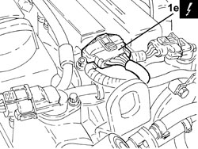
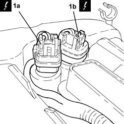
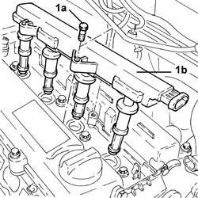
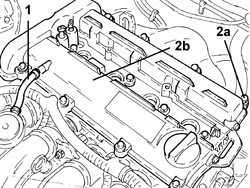
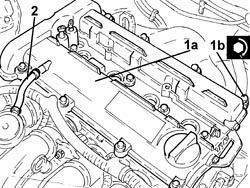
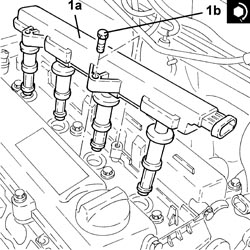

1016A20 SINGLE TAPPET COVER -R.R AND REPLACE GASKET
- Path
- Procedures > 10 ENGINE > 1016 CYLINDER HEAD/S > 1016A TAPPET COVERS > 1016A20 SINGLE TAPPET COVER -R.R AND REPLACE GASKET
- Kind
- repair procedure (removal / refitting; the operation number is the code)
- Applies to
- engines: 1.9 JTS, 2.2 JTS, 1.9 JTD 8V; all production periods
- Interactive page
- https://sloeber94.github.io/elrnDB/alfa/159/en/#/939010417
Applies to: engines: 1.9 JTS, 2.2 JTS; all production periods
 Removing
Removing
 Refitting
Refitting- Make sure that the ignition key is in the OFF position, then disconnect the battery terminal (-).
Description | Connector | |
|---|---|---|
- | Battery |
1. Disconnect the electrical connection from the ignition coil module.
Description | Connector | |
|---|---|---|
1 | Ignition coil |

Applies to: engines: 1.9 JTS, 2.2 JTS; all production periods
1. Disconnect the electrical connections (1a) and (1b) from the phase transformer electromagnets.
Description | Connector | |
|---|---|---|
1a | Exhaust side phase transformer solenoid valve |
Description | Connector | |
|---|---|---|
1b | Inlet side phase transformer solenoid valve |

Applies to: engines: 1.9 JTS, 2.2 JTS; all production periods
1. Undo the bolts (1a) and remove the ignition coil module (1b).

Applies to: engines: 1.9 JTS, 2.2 JTS; all production periods
1. Loosen the band and disconnect the engine oil vapour recovery pipe from the tappet cover.
2. Undo the bolts (2a) and remove the tappet cover (2b) complete with gasket and phase transformer electromagnets.

Applies to: engines: 1.9 JTS, 2.2 JTS; all production periods
Refitting
Removing1. Place the tappet cover (1a), complete with gasket and phase transformer electromagnets, back in its housing and secure it tightening the bolts (1b) to the recommended torque.
Component | Fastening | dia | Value (daNm) | Validity |
|---|---|---|---|---|
Tappet cover | Bolt | M6 | (cylinder head side) 0.7 - 0.9 | 1.9 JTS 2.2 JTS |
2. Connect the engine oil vapour recovery pipe to the tappet cover and tighten the band.

Applies to: engines: 1.9 JTS, 2.2 JTS; all production periods
1. Place the ignition coil module (1a) in its housing and secure it tightening the bolts (1b) to the recommended torque.
Component | Fastening | dia | Value (daNm) | Validity |
|---|---|---|---|---|
Ignition coil module | Bolt | M6 | (tappet cover side) 2.2 | 1.9 JTS 2.2 JTS |

Applies to: engines: 1.9 JTS, 2.2 JTS; all production periods
- Connect the electrical connections to the phase transformer electromagnets.
- Connect the electrical connection to the ignition coil module.
- Connect the negative battery terminal.
Applies to: engines: 1.9 JTD 8V; all production periods
Removing
RefittingOp. 1016A10 SOUND-PROOFING COVER - R.R
- Loosen the colllars and disconnec both oil vapour pipes from the cam cover.
- Undo the retaining bolts.
- Remove the tappet cover and gasket.
Applies to: engines: 1.9 JTD 8V; all production periods
Refitting
Removing- Place the tappet cover complete with gasket back in its housing and secure it by tightening the bolts to the recommended torque.
Component | Fastening | dia | Value (daNm) | Validity |
|---|---|---|---|---|
Tappet cover | Bolt | M6 | (cylinder head side) 0.8 - 1.0 | 1.9 JTD 8v |
- Connect the oil vapour pipes to the cam cover and tighten the bands.
Topics linked from this page (5)
- 1016A10 SOUND-PROOFING COVER - R.R
- A001 BATTERY
- A030 IGNITION COIL
- N092 PHASE SHIFTER SOLENOID VALVE ON INTAKE SIDE
- N093 PHASE SHIFTER SOLENOID VALVE ON EXHAUST SIDE